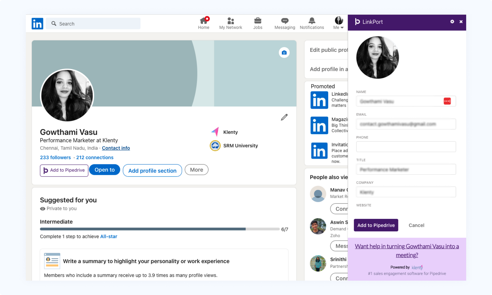

Note: Before you start, remember to download the Free LinkedIn to Pipedrive Importer extension and connect Linkport to your Pipedrive CRM account. Find how you can connect Linkport to your Pipedrive CRM account here.
Here's how you can import leads to Pipedrive CRM;
Click on "Go to LinkedIn" on the Linkport Page after choosing the fields you want to map.
Go to your prospect's LinkedIn page & choose the "Add to Pipedrive" option.
A linkport plugin will appear. All the required fields will auto-fill. Choose "Add to Pipedrive" to add the contact to Pipedrive CRM.

Make sure the field mapping is completed before you import leads from LinkedIn to Pipedrive.